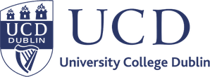
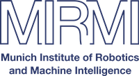
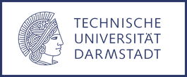

About
I study how meaning takes shape, in the human mind and in the machines we build to imitate it.
I am a cognitive scientist and AI researcher. As Senior AI Lead at Zander Labs in Berlin I lead a project connecting large language models to brain-computer interfaces, and I teach a language-models course at BTU Cottbus. Before this I spent four years as a tenured researcher (Akademischer Rat) at LMU Munich, leading a research line on large language and multimodal models, and I was a founding member of AURYAL, a SPRIND-funded neuroadaptive AI venture.
Most of what I do comes back to one question: how much of meaning depends on having a body. My doctorate was on robots that tell stories with gesture and spatial metaphor. From there I began testing whether language models really understand figurative, embodied language or only its surface, and lately I build systems that pair those models with brain and behavioural signals.
I prefer building things that work to writing about things that might. My code is open, and I use it in the courses I teach, from introductory programming to generative AI.
Activity
2015 – 2026Research
Tests whether brainwave readings can reveal a person's mental effort and silent agreement while they chat with an AI, and finds effort easier to detect than agreement.
Compares the words Trump and Harris used in their 2024 debate and finds she framed issues as recovery while he stressed crisis and decline.
Tracks how an AI language model's inner parts shift from general to specialized jobs while learning facts during training, with facts about places mastered before facts about names.
Builds the first labeled collection of queer slang from subtitles, social media, and podcasts so language tools stop mistaking it for hate speech.
Asks people and AI models to link words with spatial directions through analogies, and finds the models reason about space quite differently from humans.
Tests whether two Llama language models can work out what 96 described hand gestures mean from text alone, and finds they mostly failed.
Reruns three psychology experiments on AI language and image models to check whether they share people's instincts about basic spatial ideas like up, down, and inside.
Checks whether language models such as GPT-3 and Llama-2 can read hand gestures described in words the way people from different cultures do.
Tests whether prompting large language models with analogies makes their guesses about which words feel upward or downward match human choices more closely.
Collects the papers from a 2024 workshop where scientists compared how computers and human minds process language, from reading speed to grammar judgments.
Tests how home-helper robot models cope inside a simulated house when the lights are dimmed or walls turned to mirrors, which trips up their vision and movement.
Collects eleven peer-reviewed papers from a 2023 Bologna conference on making artificial intelligence more accountable to ordinary people, covering its ethics, governance, law, and privacy.
Builds a simulated block-stacking test where a robot arm follows multi-step plain-language orders requiring counting, comparing colors, and remembering earlier moves.
Compares how 1,335 languages carve the world into words and shows concrete things line up across languages better than abstract ones, roughly grouping languages into families.
Argues that helpful AI should sometimes break its designers' rules for the common good, and tests the idea by asking people to solve a COVID vaccine dilemma.
Tests whether language models read metaphors better when the actions involve the body, and finds bigger models handle physical metaphors more accurately.
Proposes letting elderly-care robots adjust their actions on the fly from spoken commands, and outlines a crowd-sourced set of household instructions to train them.
Argues that storytelling robots should add hand gestures and body movement to spoken tales, so audiences can follow the action and grasp its meaning more easily.
Follows COVID-19 tweets through the first 2020 wave, tracking how topics, mood, and figurative frames shifted as lockdowns wore on, with the war metaphor slowly losing ground.
Proposes a way for robots to act out machine-written stories with gestures, poses, and movement, sometimes performing actions metaphorically rather than literally to seem more creative.
Shows a setup where robots tell an AI-generated story and change the plot on the fly from the audience's gestures and facial reactions instead of spoken words.
Turns a spoken story into physical motion, with a performer walking across a space so their shifting positions and gestures mirror how characters relate and the plot moves.
Gives a robot actor emotional reactions to its lines, letting it interpret a script and choose its own metaphors, blends, and ironic touches rather than merely reciting.
Builds a system that lets robots act out computer-generated stories, using hand gestures and where they stand to convey characters' feelings and relationships.
Reads COVID-19 tweets from spring 2020 and finds people often described the virus as a war, though the war framing fit some topics better than others.
Gathered the emoji people link to 300 English nouns and used them as picture-based meaning cues to compare how abstract and concrete words differ.
Uses pairs of robots to act out computer-written stories, with pantomime gestures and stage positioning standing in for characters' emotions and social ties.
Programs two small humanoid robots and an Alexa to act out a story with gestures and stage movement, so they perform it rather than just narrate.
Builds a system that turns sentences from tweets, stories, and poems into emoji using word-meaning lookups instead of machine learning, then compares it with emoji-prediction apps.
Pairs an Alexa voice storyteller with a NAO robot that acts out the tale, turning the friction between the chatty one and the clumsy one into comedy.
Pairs an Amazon Alexa speaker with a NAO robot so the two perform a story together as a comedy double act, each covering the other's weaknesses.
Builds a NAO robot that interviews someone about their life, then turns the answers into new stories it tells back using gestures.
Builds a robot that acts out stories by matching each of about 800 plot verbs to a hand gesture, and finds the gestures made audiences laugh more.
Builds a Nao robot that tells stories aloud while picking hand gestures from nine recurring spatial patterns, linking what happens in the plot to body movement.
Builds a system that turns words, especially action verbs, into strings of emoji using picture-puzzle tricks, metaphor, and idioms.
Teaching
-
Language Models: ML Basics to Modern AILectureBTU Cottbus2026 –
-
Applications of Computational LinguisticsLecture Cognitive LinguisticsSeminarLMU Munich2022 – 26
-
Introduction to ProgrammingLecture Computational CreativitySeminarLMU Munich2021 – 26
-
Thesis supervisionMSc / BScBy arrangement
News


